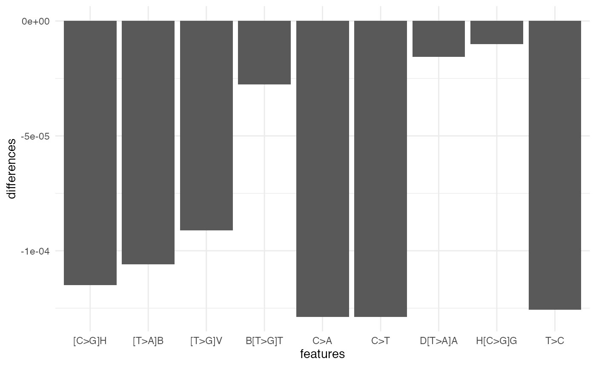

The supersigs package implements the supervised method proposed by Afsari, et al. to find signatures (“SuperSigs”). In this vignette, we cover how to preprocess your data and run the method in supersigs.
If you have a VCF file, you can use readVcf from the VariantAnnotation package to read in your VCF file as a VCF object. The age of each patient should be stored as age in the colData of your VCF object. Then use process_vcf to transform the VCF object into a simplified data frame format, which will be explained further in Example data.
If you do not have a VCF file, skip to Example data.
# Load packages for make_matrix function
suppressPackageStartupMessages({
library(VariantAnnotation)
})
fl <- system.file("extdata", "chr22.vcf.gz", package="VariantAnnotation")
vcf <- VariantAnnotation::readVcf(fl, "hg19")
# Subset to first sample
vcf <- vcf[, 1]
# Subset to row positions with homozygous or heterozygous alt
positions <- geno(vcf)$GT != "0|0"
vcf <- vcf[positions[, 1],]
colData(vcf)$age <- 50 # Add patient age to colData
dt <- process_vcf(vcf)
head(dt)
#> sample_id age chromosome position ref alt
#> 1 HG00096 50 chr22 50326116 C T
#> 2 HG00096 50 chr22 50336761 G A
#> 3 HG00096 50 chr22 50346072 C T
#> 4 HG00096 50 chr22 50350418 T C
#> 5 HG00096 50 chr22 50351413 C T
#> 6 HG00096 50 chr22 50351977 G AThe method uses single-base mutations in exomic data from cancer samples. Specifically, it requires data on every sample’s mutations, the positions of those mutations, and the age of all patients. This data can be represented as a list of mutations. Below is an example dataset (stored and accessible from the supersigs R package). If you have a VCF file, read the VCF file section to see how to process your data into the following format.
sample_id is an ID for each sampleage is the age of the patientchromosome and position is the position of the mutationref is the original nucleotidealt is the mutated nucleotide
head(example_dt)
#> sample_id age chromosome position ref alt
#> 1 1 50 chr1 94447621 G C
#> 2 1 50 chr2 202005395 A C
#> 3 1 50 chr7 20784978 T A
#> 4 1 50 chr7 87179255 C G
#> 5 1 50 chr19 1059712 G T
#> 6 2 55 chr1 76226977 T COnce you’ve read in your data, you will need to transform it into a data frame of features before running the core functions. This involves 2 steps:
First, we assume that mutations are the same regardless of the strand on which it occurred. For example, this means that C>A mutations are considered the same as G>T mutations and we will convert all G>T mutations to be denoted as C>A mutations.
Because the features used are built upon trinucleotide features (e.g. A[C>A]T), this will require matching your mutations to a reference genome to identify what the flanking bases of every mutation are. In our example below, we will use the hg19 reference genome.
Both of these steps are done by the make_matrix function. Note that using the make_matrix function requires installing and loading a reference genome (BSgenome.Hsapiens.UCSC.hg19 and BSgenome.Hsapiens.UCSC.hg38 are supported).
# Load packages for make_matrix function
suppressPackageStartupMessages({
library(BSgenome.Hsapiens.UCSC.hg19)
})We apply make_matrix to transform our example dataset (example_dt) into a data frame of trinucleotide mutations (input_dt), which is the format required by the supersigs R package. Each row in input_dt corresponds to a different patient and the values in the columns are the number of mutations for each trinucleotide mutation.
input_dt <- make_matrix(example_dt)
head(input_dt)
#> # A tibble: 5 x 98
#> sample_id age `A[T>G]T` `C[T>A]A` `G[C>A]A` `G[C>G]G` `G[C>G]T` `A[C>G]T`
#> <dbl> <dbl> <dbl> <dbl> <dbl> <dbl> <dbl> <dbl>
#> 1 1 50 1 1 1 1 1 0
#> 2 2 55 0 0 0 0 0 1
#> 3 3 72 1 1 0 0 0 0
#> 4 4 53 0 0 0 0 0 1
#> 5 5 48 0 1 1 0 0 0
#> # … with 90 more variables: C[C>A]T <dbl>, C[T>C]G <dbl>, T[C>A]C <dbl>,
#> # T[C>A]T <dbl>, A[T>C]C <dbl>, C[T>C]C <dbl>, T[T>A]C <dbl>, C[C>G]G <dbl>,
#> # G[C>T]A <dbl>, A[C>A]T <dbl>, C[C>A]C <dbl>, G[T>G]T <dbl>, C[C>T]C <dbl>,
#> # T[C>T]C <dbl>, A[C>T]C <dbl>, G[C>T]C <dbl>, C[C>T]T <dbl>, T[C>T]T <dbl>,
#> # A[C>T]T <dbl>, G[C>T]T <dbl>, C[C>T]A <dbl>, T[C>T]A <dbl>, A[C>T]A <dbl>,
#> # C[C>T]G <dbl>, T[C>T]G <dbl>, A[C>T]G <dbl>, G[C>T]G <dbl>, A[C>A]C <dbl>,
#> # G[C>A]C <dbl>, G[C>A]T <dbl>, C[C>A]A <dbl>, T[C>A]A <dbl>, A[C>A]A <dbl>,
#> # C[C>A]G <dbl>, T[C>A]G <dbl>, A[C>A]G <dbl>, G[C>A]G <dbl>, C[C>G]C <dbl>,
#> # T[C>G]C <dbl>, A[C>G]C <dbl>, G[C>G]C <dbl>, C[C>G]T <dbl>, T[C>G]T <dbl>,
#> # C[C>G]A <dbl>, T[C>G]A <dbl>, A[C>G]A <dbl>, G[C>G]A <dbl>, T[C>G]G <dbl>,
#> # A[C>G]G <dbl>, T[T>C]C <dbl>, G[T>C]C <dbl>, C[T>C]T <dbl>, T[T>C]T <dbl>,
#> # A[T>C]T <dbl>, G[T>C]T <dbl>, C[T>C]A <dbl>, T[T>C]A <dbl>, A[T>C]A <dbl>,
#> # G[T>C]A <dbl>, T[T>C]G <dbl>, A[T>C]G <dbl>, G[T>C]G <dbl>, C[T>A]C <dbl>,
#> # A[T>A]C <dbl>, G[T>A]C <dbl>, C[T>A]T <dbl>, T[T>A]T <dbl>, A[T>A]T <dbl>,
#> # G[T>A]T <dbl>, T[T>A]A <dbl>, A[T>A]A <dbl>, G[T>A]A <dbl>, C[T>A]G <dbl>,
#> # T[T>A]G <dbl>, A[T>A]G <dbl>, G[T>A]G <dbl>, C[T>G]C <dbl>, T[T>G]C <dbl>,
#> # A[T>G]C <dbl>, G[T>G]C <dbl>, C[T>G]T <dbl>, T[T>G]T <dbl>, C[T>G]A <dbl>,
#> # T[T>G]A <dbl>, A[T>G]A <dbl>, G[T>G]A <dbl>, C[T>G]G <dbl>, T[T>G]G <dbl>,
#> # A[T>G]G <dbl>, G[T>G]G <dbl>To apply the supervised method on your data, run the get_signature function. The function has two parameters: an input data frame data and the factor (e.g. factor = "Smoking"). data is a data frame with the following columns:
IndVar (indicator variable) is a logical indicator for whether they were exposed to the factor or notsample_id is an ID for each sampleage is the age of the patientThe process of converting a VCF file to this format is covered in Preprocessing your data. An example for data is printed below.
suppressPackageStartupMessages({
library(dplyr)
})
# Add IndVar column
input_dt <- input_dt %>%
mutate(IndVar = c(1, 1, 1, 0, 0)) %>%
relocate(IndVar)
head(input_dt)
#> # A tibble: 5 x 99
#> IndVar sample_id age `A[T>G]T` `C[T>A]A` `G[C>A]A` `G[C>G]G` `G[C>G]T`
#> <dbl> <dbl> <dbl> <dbl> <dbl> <dbl> <dbl> <dbl>
#> 1 1 1 50 1 1 1 1 1
#> 2 1 2 55 0 0 0 0 0
#> 3 1 3 72 1 1 0 0 0
#> 4 0 4 53 0 0 0 0 0
#> 5 0 5 48 0 1 1 0 0
#> # … with 91 more variables: A[C>G]T <dbl>, C[C>A]T <dbl>, C[T>C]G <dbl>,
#> # T[C>A]C <dbl>, T[C>A]T <dbl>, A[T>C]C <dbl>, C[T>C]C <dbl>, T[T>A]C <dbl>,
#> # C[C>G]G <dbl>, G[C>T]A <dbl>, A[C>A]T <dbl>, C[C>A]C <dbl>, G[T>G]T <dbl>,
#> # C[C>T]C <dbl>, T[C>T]C <dbl>, A[C>T]C <dbl>, G[C>T]C <dbl>, C[C>T]T <dbl>,
#> # T[C>T]T <dbl>, A[C>T]T <dbl>, G[C>T]T <dbl>, C[C>T]A <dbl>, T[C>T]A <dbl>,
#> # A[C>T]A <dbl>, C[C>T]G <dbl>, T[C>T]G <dbl>, A[C>T]G <dbl>, G[C>T]G <dbl>,
#> # A[C>A]C <dbl>, G[C>A]C <dbl>, G[C>A]T <dbl>, C[C>A]A <dbl>, T[C>A]A <dbl>,
#> # A[C>A]A <dbl>, C[C>A]G <dbl>, T[C>A]G <dbl>, A[C>A]G <dbl>, G[C>A]G <dbl>,
#> # C[C>G]C <dbl>, T[C>G]C <dbl>, A[C>G]C <dbl>, G[C>G]C <dbl>, C[C>G]T <dbl>,
#> # T[C>G]T <dbl>, C[C>G]A <dbl>, T[C>G]A <dbl>, A[C>G]A <dbl>, G[C>G]A <dbl>,
#> # T[C>G]G <dbl>, A[C>G]G <dbl>, T[T>C]C <dbl>, G[T>C]C <dbl>, C[T>C]T <dbl>,
#> # T[T>C]T <dbl>, A[T>C]T <dbl>, G[T>C]T <dbl>, C[T>C]A <dbl>, T[T>C]A <dbl>,
#> # A[T>C]A <dbl>, G[T>C]A <dbl>, T[T>C]G <dbl>, A[T>C]G <dbl>, G[T>C]G <dbl>,
#> # C[T>A]C <dbl>, A[T>A]C <dbl>, G[T>A]C <dbl>, C[T>A]T <dbl>, T[T>A]T <dbl>,
#> # A[T>A]T <dbl>, G[T>A]T <dbl>, T[T>A]A <dbl>, A[T>A]A <dbl>, G[T>A]A <dbl>,
#> # C[T>A]G <dbl>, T[T>A]G <dbl>, A[T>A]G <dbl>, G[T>A]G <dbl>, C[T>G]C <dbl>,
#> # T[T>G]C <dbl>, A[T>G]C <dbl>, G[T>G]C <dbl>, C[T>G]T <dbl>, T[T>G]T <dbl>,
#> # C[T>G]A <dbl>, T[T>G]A <dbl>, A[T>G]A <dbl>, G[T>G]A <dbl>, C[T>G]G <dbl>,
#> # T[T>G]G <dbl>, A[T>G]G <dbl>, G[T>G]G <dbl>Once you have the correct data format, apply get_signature to the dataset to get your SuperSig, which is an S4 object containing four slots:
Signature is the signature, represented as their differences in mean rates (or the overall mean rate if the factor is “age”) between the two groups (exposed versus unexposed)Features is the list of features that comprise the signature and their representation in terms of the fundamental (trinucleotide) mutationsAUC is the apparent AUC of the model (i.e. not cross-validated)Model is the list containing the trained logistic regression model (glm class)
set.seed(1)
supersig <- get_signature(data = input_dt, factor = "Smoking")
#> Begin feature engineering...
#> Begin cross-validated selection over 4 features and 15 inner folds...
#> ...testing inner fold 1
#> ...testing inner fold 2
#> ...testing inner fold 3
#> ...testing inner fold 4
#> ...testing inner fold 5
#> ...testing inner fold 6
#> ...testing inner fold 7
#> ...testing inner fold 8
#> ...testing inner fold 9
#> ...testing inner fold 10
#> ...testing inner fold 11
#> ...testing inner fold 12
#> ...testing inner fold 13
#> ...testing inner fold 14
#> ...testing inner fold 15
supersig
#> Signature:
#> X1
#> 1 -0.0007475199
#> Features:
#> $X1
#> F11 F12 F13 F14 F117 F118 F119 F120
#> "A[C>A]A" "A[C>A]C" "A[C>A]G" "A[C>A]T" "A[C>G]A" "A[C>G]C" "A[C>G]G" "A[C>G]T"
#> F132 F133 F134 F135 F148 F149 F150 F151
#> "A[C>T]A" "A[C>T]C" "A[C>T]G" "A[C>T]T" "A[T>A]A" "A[T>A]C" "A[T>A]G" "A[T>A]T"
#> F163 F164 F165 F166 F179 F180 F181 F15
#> "A[T>C]A" "A[T>C]C" "A[T>C]G" "A[T>C]T" "A[T>G]A" "A[T>G]C" "A[T>G]G" "C[C>A]A"
#> F16 F17 F18 F121 F122 F123 F124 F136
#> "C[C>A]C" "C[C>A]G" "C[C>A]T" "C[C>G]A" "C[C>G]C" "C[C>G]G" "C[C>G]T" "C[C>T]A"
#> F137 F138 F139 F152 F153 F154 F167 F168
#> "C[C>T]C" "C[C>T]G" "C[C>T]T" "C[T>A]C" "C[T>A]G" "C[T>A]T" "C[T>C]A" "C[T>C]C"
#> F169 F170 F182 F183 F184 F185 F19 F110
#> "C[T>C]G" "C[T>C]T" "C[T>G]A" "C[T>G]C" "C[T>G]G" "C[T>G]T" "G[C>A]A" "G[C>A]C"
#> F111 F112 F125 F126 F127 F140 F141 F142
#> "G[C>A]G" "G[C>A]T" "G[C>G]A" "G[C>G]C" "G[C>G]T" "G[C>T]A" "G[C>T]C" "G[C>T]G"
#> F143 F155 F156 F157 F158 F171 F172 F173
#> "G[C>T]T" "G[T>A]A" "G[T>A]C" "G[T>A]G" "G[T>A]T" "G[T>C]A" "G[T>C]C" "G[T>C]G"
#> F174 F186 F187 F188 F189 F113 F114 F115
#> "G[T>C]T" "G[T>G]A" "G[T>G]C" "G[T>G]G" "G[T>G]T" "T[C>A]A" "T[C>A]C" "T[C>A]G"
#> F116 F128 F129 F130 F131 F144 F145 F146
#> "T[C>A]T" "T[C>G]A" "T[C>G]C" "T[C>G]G" "T[C>G]T" "T[C>T]A" "T[C>T]C" "T[C>T]G"
#> F147 F159 F160 F161 F162 F175 F176 F177
#> "T[C>T]T" "T[T>A]A" "T[T>A]C" "T[T>A]G" "T[T>A]T" "T[T>C]A" "T[T>C]C" "T[T>C]G"
#> F178 F190 F191 F192 F193
#> "T[T>C]T" "T[T>G]A" "T[T>G]C" "T[T>G]G" "T[T>G]T"
#>
#> Model:
#> $Logit
#>
#> Call: glm(formula = IndVar ~ ., family = binomial(), data = x)
#>
#> Coefficients:
#> (Intercept) X1
#> 7.118 -86.601
#>
#> Degrees of Freedom: 4 Total (i.e. Null); 3 Residual
#> Null Deviance: 6.73
#> Residual Deviance: 4.279 AIC: 8.279To obtain a signature representation that is more interpretable, you can group the trinucleotide features within each feature using the simplify_signature function (with an option to use IUPAC labels). This is useful for making plots of signatures.
features <- simplify_signature(object = supersig, iupac = FALSE)
features_iupac <- simplify_signature(object = supersig, iupac = TRUE)
library(ggplot2)
data.frame(features = names(features_iupac),
differences = features_iupac) %>%
ggplot(aes(x = features, y = differences)) +
geom_col() +
theme_minimal()
To apply the SuperSig to a new dataset, use the predict_signature function. This function returns the new dataset with columns for feature counts for the signature and a score column for the predicted classification score.
Below is an example for the SuperSig we trained in the previous section. We reuse input_dt as our “new data” for illustrative purposes, but in practice, you would use a different dataset from the one that was used to train the signature (e.g. a test set).
newdata = predict_signature(supersig, newdata = input_dt, factor = "Smoking")
newdata %>%
select(X1, score)
#> # A tibble: 5 x 2
#> X1 score
#> <dbl> <dbl>
#> 1 0.04 0.975
#> 2 0.0909 0.320
#> 3 0.0417 0.971
#> 4 0.0943 0.259
#> 5 0.0833 0.475In addition, you may wish to use a SuperSig pre-trained on TCGA data. These are accessible from the package in supersig_ls, where each element of the list is a SuperSig. There are 67 SuperSigs that have been trained on various tissues and factors. The names are printed below (formatted as “factor (tissue)”). Details regarding the training of these signatures are discussed in Afsari, et al. (2021, ELife).
names(supersig_ls)
#> [1] "AGE (LAML)" "AGE (BLCA)" "AGE (LUAD)" "AGE (LGG)"
#> [5] "AGE (HNSCC)" "AGE (KIRC)" "AGE (KIRP)" "AGE (KICH)"
#> [9] "AGE (LIHC)" "AGE (STAD)" "AGE (THCA)" "AGE (UVM)"
#> [13] "AGE (SKCM)" "AGE (ACC)" "AGE (CHOL)" "AGE (GBM)"
#> [17] "AGE (CESC)" "AGE (COAD)" "AGE (PCPG)" "AGE (PAAD)"
#> [21] "AGE (PRAD)" "AGE (ESCSQ)" "AGE (ESCAD)" "AGE (UCEC)"
#> [25] "AGE (UCS)" "AGE (BRCA)" "AGE (SARC)" "AGE (TGCT)"
#> [29] "AGE (THYM)" "AGE (OV)" "SMOKING (BLCA)" "SMOKING (LUAD)"
#> [33] "SMOKING (HNSCC)" "SMOKING (KIRP)" "SMOKING (PAAD)" "SMOKING (ESCSQ)"
#> [37] "SMOKING (ESCAD)" "SMOKING (CESC)" "POLE (UCEC)" "POLE (STAD)"
#> [41] "POLE (COAD)" "POLE (BRCA)" "MSI (UCEC)" "MSI (STAD)"
#> [45] "MSI (COAD)" "BRCA (BRCA)" "BRCA (OV)" "UV* (SKCM)"
#> [49] "POLD (UCEC)" "POLD (STAD)" "MGMT (GBM)" "MGMT (LGG)"
#> [53] "IDH (LGG)" "IDH (GBM)" "BMI (UCEC)" "BMI (KIRP)"
#> [57] "BMI (ESCA)" "BMI (COAD)" "ALCOHOL (HNSCC)" "ALCOHOL (ESCA)"
#> [61] "ALCOHOL (LIHC)" "HepB (LIHC)" "HepC (LIHC)" "AAcid (BLCA)"
#> [65] "Asb* (MESO)" "APOPEC (CESC)" "APOPEC (KIRC)"
# Use pre-trained signature
newdata = predict_signature(supersig_ls[["SMOKING (LUAD)"]],
newdata = input_dt, factor = "Smoking")
newdata %>%
select(IndVar, X1, X2, X3, score)
#> # A tibble: 5 x 5
#> IndVar X1 X2 X3 score
#> <dbl> <dbl> <dbl> <dbl> <dbl>
#> 1 1 0.02 0 0 0.305
#> 2 1 0.0182 0 0 0.303
#> 3 1 0 0 0 0.280
#> 4 0 0.0189 0 0 0.304
#> 5 0 0.0417 0 0 0.333In some cases, you may be interested in removing the contribution of a supervised signature from your data frame of mutations as a way to adjust for a particular factor. For example, suppose that we are interested in the deciphering a signature for smoking in lung cancer. We can first remove the contribution of the aging signature in lung cancer, before learning the smoking signature with a supervised or unsupervised method. We discuss in Afsari, et al. (2021, ELife) how doing so can lead to better performance.
adjusted_dt <- partial_signature(data = input_dt, object = supersig)
head(adjusted_dt)
#> # A tibble: 5 x 99
#> IndVar sample_id AGE `A[T>G]T` `C[T>A]A` `G[C>A]A` `G[C>G]G` `G[C>G]T`
#> <dbl> <dbl> <dbl> <dbl> <dbl> <dbl> <dbl> <dbl>
#> 1 1 1 50 1 1 1.04 1 1.04
#> 2 1 2 55 0 0 0.0411 0 0.0411
#> 3 1 3 72 1 1 0.0538 0 0.0538
#> 4 0 4 53 0 0 0.0396 0 0.0396
#> 5 0 5 48 0 1 1.04 0 0.0359
#> # … with 91 more variables: A[C>G]T <dbl>, C[C>A]T <dbl>, C[T>C]G <dbl>,
#> # T[C>A]C <dbl>, T[C>A]T <dbl>, A[T>C]C <dbl>, C[T>C]C <dbl>, T[T>A]C <dbl>,
#> # C[C>G]G <dbl>, G[C>T]A <dbl>, A[C>A]T <dbl>, C[C>A]C <dbl>, G[T>G]T <dbl>,
#> # C[C>T]C <dbl>, T[C>T]C <dbl>, A[C>T]C <dbl>, G[C>T]C <dbl>, C[C>T]T <dbl>,
#> # T[C>T]T <dbl>, A[C>T]T <dbl>, G[C>T]T <dbl>, C[C>T]A <dbl>, T[C>T]A <dbl>,
#> # A[C>T]A <dbl>, C[C>T]G <dbl>, T[C>T]G <dbl>, A[C>T]G <dbl>, G[C>T]G <dbl>,
#> # A[C>A]C <dbl>, G[C>A]C <dbl>, G[C>A]T <dbl>, C[C>A]A <dbl>, T[C>A]A <dbl>,
#> # A[C>A]A <dbl>, C[C>A]G <dbl>, T[C>A]G <dbl>, A[C>A]G <dbl>, G[C>A]G <dbl>,
#> # C[C>G]C <dbl>, T[C>G]C <dbl>, A[C>G]C <dbl>, G[C>G]C <dbl>, C[C>G]T <dbl>,
#> # T[C>G]T <dbl>, C[C>G]A <dbl>, T[C>G]A <dbl>, A[C>G]A <dbl>, G[C>G]A <dbl>,
#> # T[C>G]G <dbl>, A[C>G]G <dbl>, T[T>C]C <dbl>, G[T>C]C <dbl>, C[T>C]T <dbl>,
#> # T[T>C]T <dbl>, A[T>C]T <dbl>, G[T>C]T <dbl>, C[T>C]A <dbl>, T[T>C]A <dbl>,
#> # A[T>C]A <dbl>, G[T>C]A <dbl>, T[T>C]G <dbl>, A[T>C]G <dbl>, G[T>C]G <dbl>,
#> # C[T>A]C <dbl>, A[T>A]C <dbl>, G[T>A]C <dbl>, C[T>A]T <dbl>, T[T>A]T <dbl>,
#> # A[T>A]T <dbl>, G[T>A]T <dbl>, T[T>A]A <dbl>, A[T>A]A <dbl>, G[T>A]A <dbl>,
#> # C[T>A]G <dbl>, T[T>A]G <dbl>, A[T>A]G <dbl>, G[T>A]G <dbl>, C[T>G]C <dbl>,
#> # T[T>G]C <dbl>, A[T>G]C <dbl>, G[T>G]C <dbl>, C[T>G]T <dbl>, T[T>G]T <dbl>,
#> # C[T>G]A <dbl>, T[T>G]A <dbl>, A[T>G]A <dbl>, G[T>G]A <dbl>, C[T>G]G <dbl>,
#> # T[T>G]G <dbl>, A[T>G]G <dbl>, G[T>G]G <dbl>
sessionInfo()
#> R Under development (unstable) (2021-03-29 r80130)
#> Platform: x86_64-apple-darwin17.0 (64-bit)
#> Running under: macOS Mojave 10.14.6
#>
#> Matrix products: default
#> BLAS: /Library/Frameworks/R.framework/Versions/4.1/Resources/lib/libRblas.dylib
#> LAPACK: /Library/Frameworks/R.framework/Versions/4.1/Resources/lib/libRlapack.dylib
#>
#> locale:
#> [1] en_US.UTF-8/en_US.UTF-8/en_US.UTF-8/C/en_US.UTF-8/en_US.UTF-8
#>
#> attached base packages:
#> [1] stats4 parallel stats graphics grDevices utils datasets
#> [8] methods base
#>
#> other attached packages:
#> [1] ggplot2_3.3.3 dplyr_1.0.5
#> [3] BSgenome.Hsapiens.UCSC.hg19_1.4.3 BSgenome_1.59.2
#> [5] rtracklayer_1.51.5 VariantAnnotation_1.37.1
#> [7] Rsamtools_2.7.2 Biostrings_2.59.2
#> [9] XVector_0.31.1 SummarizedExperiment_1.21.3
#> [11] Biobase_2.51.0 GenomicRanges_1.43.4
#> [13] GenomeInfoDb_1.27.11 IRanges_2.25.7
#> [15] S4Vectors_0.29.15 MatrixGenerics_1.3.1
#> [17] matrixStats_0.58.0 BiocGenerics_0.37.1
#> [19] supersigs_0.99.6
#>
#> loaded via a namespace (and not attached):
#> [1] colorspace_2.0-0 rjson_0.2.20 ellipsis_0.3.1
#> [4] class_7.3-18 rprojroot_2.0.2 fs_1.5.0
#> [7] rstudioapi_0.13 farver_2.1.0 listenv_0.8.0
#> [10] furrr_0.2.2 bit64_4.0.5 AnnotationDbi_1.53.1
#> [13] prodlim_2019.11.13 fansi_0.4.2 lubridate_1.7.10
#> [16] codetools_0.2-18 splines_4.1.0 cachem_1.0.4
#> [19] knitr_1.31 jsonlite_1.7.2 pROC_1.17.0.1
#> [22] caret_6.0-86 dbplyr_2.1.1 png_0.1-7
#> [25] compiler_4.1.0 httr_1.4.2 assertthat_0.2.1
#> [28] Matrix_1.3-2 fastmap_1.1.0 cli_2.4.0
#> [31] prettyunits_1.1.1 htmltools_0.5.1.1 tools_4.1.0
#> [34] gtable_0.3.0 glue_1.4.2 GenomeInfoDbData_1.2.4
#> [37] reshape2_1.4.4 rappdirs_0.3.3 Rcpp_1.0.6
#> [40] jquerylib_0.1.3 pkgdown_1.6.1 vctrs_0.3.7
#> [43] nlme_3.1-152 iterators_1.0.13 timeDate_3043.102
#> [46] gower_0.2.2 xfun_0.22 stringr_1.4.0
#> [49] globals_0.14.0 lifecycle_1.0.0 restfulr_0.0.13
#> [52] XML_3.99-0.6 future_1.21.0 zlibbioc_1.37.0
#> [55] MASS_7.3-53.1 scales_1.1.1 ipred_0.9-11
#> [58] hms_1.0.0 ragg_1.1.2 curl_4.3
#> [61] yaml_2.2.1 memoise_2.0.0 sass_0.3.1
#> [64] biomaRt_2.47.7 rpart_4.1-15 stringi_1.5.3
#> [67] RSQLite_2.2.6 highr_0.8 BiocIO_1.1.2
#> [70] desc_1.3.0 foreach_1.5.1 filelock_1.0.2
#> [73] GenomicFeatures_1.43.8 BiocParallel_1.25.5 lava_1.6.9
#> [76] rlang_0.4.10 pkgconfig_2.0.3 systemfonts_1.0.1
#> [79] bitops_1.0-6 rsample_0.0.9 evaluate_0.14
#> [82] lattice_0.20-41 purrr_0.3.4 labeling_0.4.2
#> [85] GenomicAlignments_1.27.2 recipes_0.1.15 bit_4.0.4
#> [88] tidyselect_1.1.0 parallelly_1.24.0 plyr_1.8.6
#> [91] magrittr_2.0.1 R6_2.5.0 generics_0.1.0
#> [94] DelayedArray_0.17.10 DBI_1.1.1 pillar_1.6.0
#> [97] withr_2.4.1 survival_3.2-10 KEGGREST_1.31.1
#> [100] RCurl_1.98-1.3 nnet_7.3-15 tibble_3.1.0
#> [103] crayon_1.4.1 utf8_1.2.1 BiocFileCache_1.99.3
#> [106] rmarkdown_2.7 progress_1.2.2 grid_4.1.0
#> [109] data.table_1.14.0 blob_1.2.1 ModelMetrics_1.2.2.2
#> [112] digest_0.6.27 tidyr_1.1.3 textshaping_0.3.3
#> [115] munsell_0.5.0 bslib_0.2.4